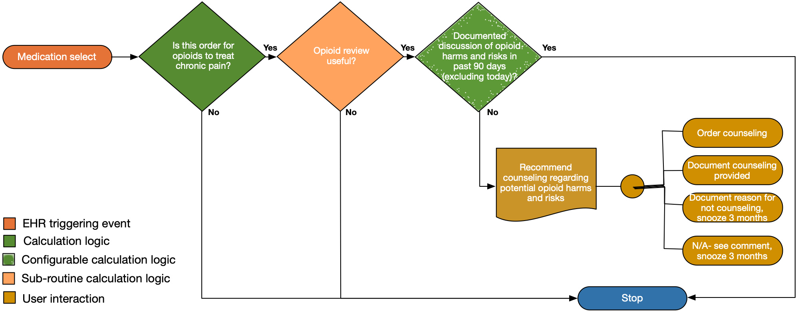

Before starting and periodically during opioid therapy, clinicians should discuss with patients known risks and realistic benefits of opioid therapy and patient and clinician responsibilities for managing therapy (recommendation category: A, evidence type: 3).
Provide links to the CDC Guidance.
| Definition | Expression | Data (Terminology) Requirement |
|---|---|---|
| Order for extended release opioid with ambulatory use potential | Current order for opioids in relevant value set for extended release opioids – ideally the order should be selected prior to being committed to the system | Extended release opioid value set |
| Documented discussion of opioid harms and risks in past 90 days including today | Search for presence in last 90 days of:
|
Procedure (? Regime therapy) – counseling for opioid harms and risks |
The following artifacts formalize the description of the logic and behavior defined by this recommendation.
| Resource | Type | Description |
|---|---|---|
| CDC Opioid Prescribing Guideline Recommendation #3 | PlanDefinition | Event-Condition-Action rule that implements behavior for CDC Opioid Prescribing Guideline Recommendation #3 |
| Recommendation #3 - prescribe immediate-release opioids instead of extended-release/long-acting (ER/LA) opioids | Library | Defines the data requirements to support evaluation of recommendation #3 |